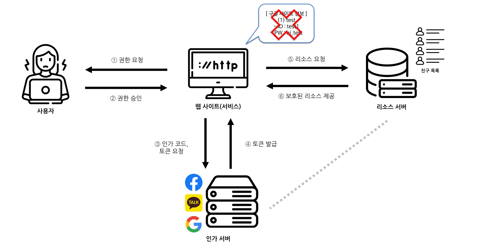
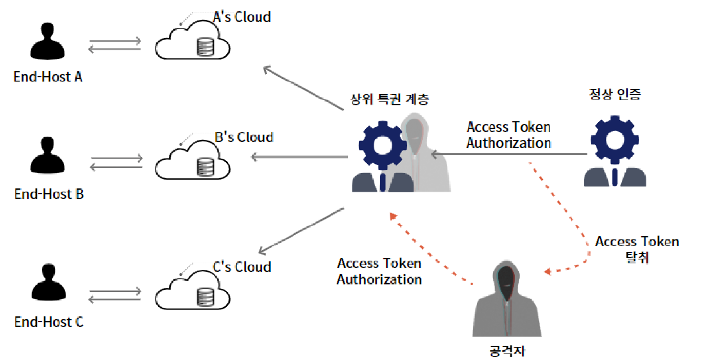
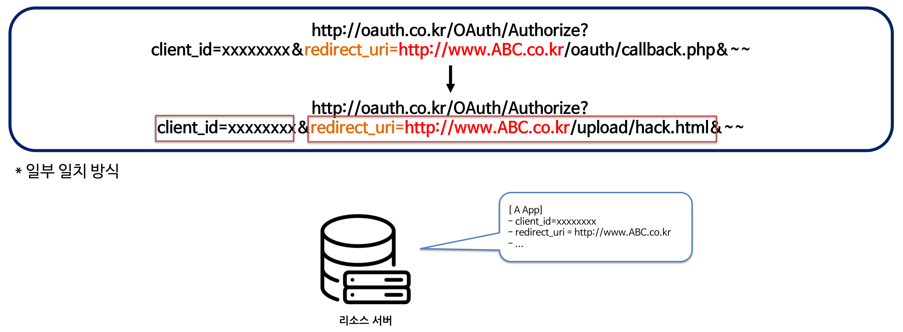
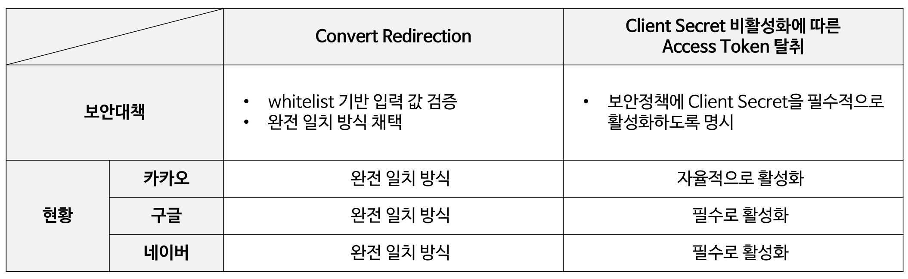

내용
소셜 로그인 토큰 하나가 탈취되면 피해가 여러 서비스와 클라우드로 번집니다.
- 동작 방식
- OAuth 2.0은 한 번의 인증으로 다른 서비스의 접근 권한까지 부여합니다.
- 실제 사례
- 2022년 4월 GitHub에서 탈취된 토큰으로 여러 조직의 데이터가 무단 다운로드됐습니다.

Publication
소셜 로그인에 쓰이는 OAuth 2.0의 인증 흐름을 직접 점검했습니다. 클라우드에서 접근 토큰 탈취가 관리자 계정과 데이터 침해로 번지는 시나리오와 대책을 정리했습니다.
소셜 로그인 토큰 하나가 탈취되면 피해가 여러 서비스와 클라우드로 번집니다.

클라우드 환경의 토큰 탈취 시나리오를 작성하고 취약점 두 가지에 대책을 제시했습니다.

직접 만든 로그인 사이트에서 인가 코드를 가로채 토큰을 받았고 정량 지표는 없습니다.


클라우드 환경의 토큰 탈취 시나리오와 국내 주요 사업자의 설정 현황을 정리했습니다.
수작업으로 한 점검을 전용 도구로 자동화하는 것이 다음 계획입니다.